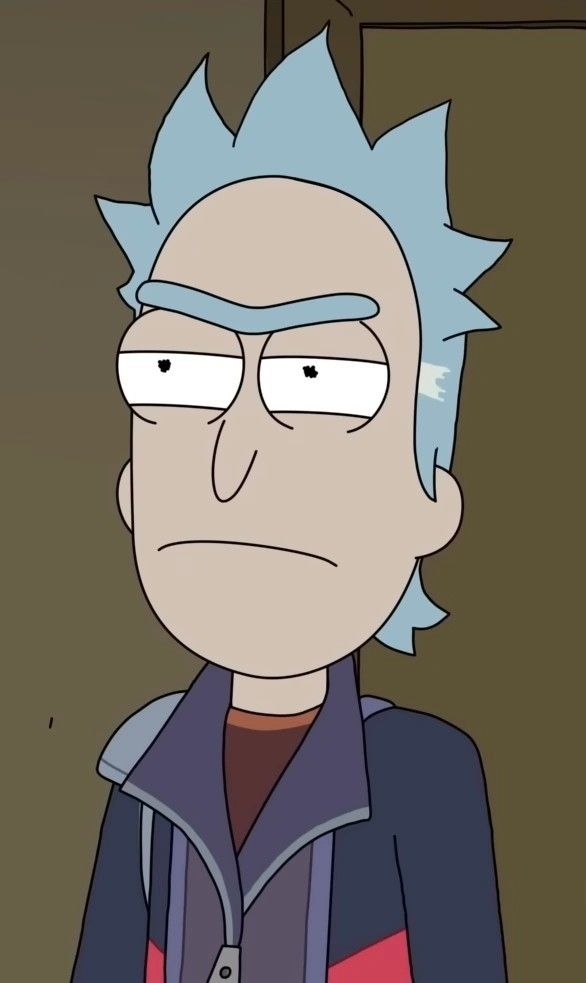

Rick Sánchez de la dimensión de la Tierra C-137 es el padre de Beth Smith,. Se dice que estuvo alejado de su familia durante demasiados años antes de los acontecimientos del programa. Viaja frecuentemente en aventuras por el espacio y otros planetas y dimensiones con su nieto Morty. En la tercera temporada se revela que tiene mas de 60 años. Rick es retratado como un cientifico loco; utilizando su destreza matemática y científica junto con apatía y cinismo egoísta, emerge a salvo de cualquier situación, sin importar las consecuencias de su autopreservación. Rick también, en algunos episodios, trata desesperadamente de recuperar a su familia después de perder su confianza. Los creadores querían que pareciera que tiene el control estratégicamente, pero no en absoluto cuando se trataba de asuntos personales.
El episodio de estreno de la tercera temporada, muestran un posible origen de Rick, en el que era un científico bienintencionado que amaba a su esposa Diane y a su hija Beth, pero tuvo un encuentro con un miembro del Consejo de Ricks durante sus pruebas iniciales de un prototipo de la pistola portal interdimensional, que le ofreció el secreto para crear el dispositivo y unirse al Consejo. Poco después de su negativa, y su promesa de abandonar la ciencia para siempre, se envió una bomba a través de un portal, matando a Diane y Beth. Rick afirma que se trataba de una memoria falsa que creó para engañar a su interrogador e implantar un virus en el dispositivo de lectura de mentes al que estaba conectado, permitiéndole secuestrar su cuerpo y escapar de la prisión de la Federación. Al final del episodio, Rick insiste de nuevo, en un desvarío a Morty, en que la muerte de su esposa e hija fue un recuerdo falso.

EVIL MORTY